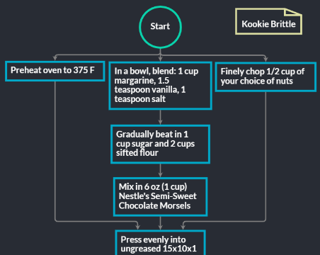
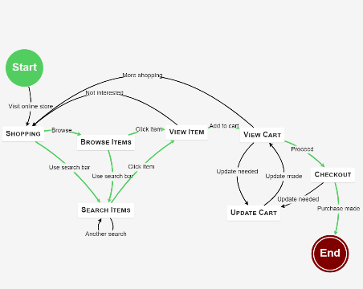
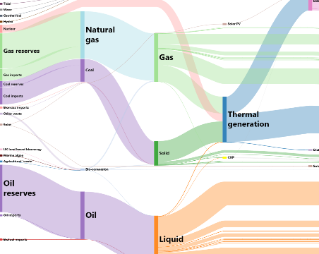
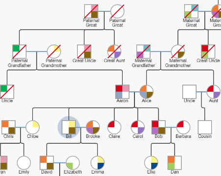
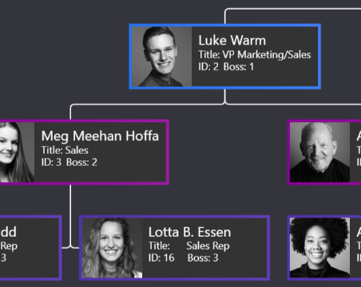
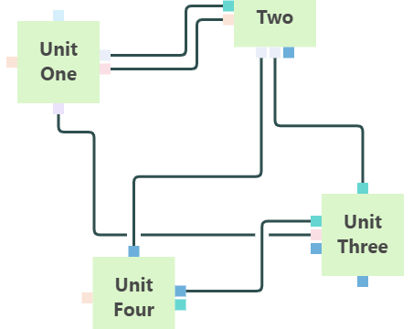
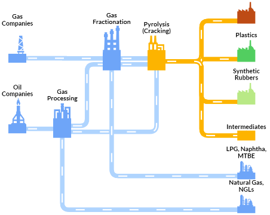
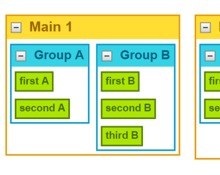

GoJS 2.1 发布: 阅读所有 新功能和更改
新增:一个用于简化React集成的React组件, gojs-react和一个使用该组件的React示例 gojs-react-basic. 更多有关信息，请参见React中使用GoJS简介页面
新增:一个用于简化Angular集成的Angular组件 gojs-angular,以及一个使用该组件的Angular示例 gojs-angular-basic. 更多有关信息，请参见 Angular中使用GoJs简介页面
GoJS是一个JavaScript和Typescript库，用于构建交互式的图
从简单的流程图和组织结构图到高度特定的工业图，SCADA和BPMN图，基因图和爆发型模型等医学图，等等。GoJS使用可自定义的模板和布局使构建复杂节点，链接和组的图变得容易。
GoJS提供了用于用户交互的高级功能，例如拖放，复制和粘贴，就地文本编辑，工具提示，上下文菜单，自动布局，模板，数据绑定和模型，事务状态和撤消管理，调色板，概述，事件处理程序，命令，用于自定义操作的可扩展工具以及可自定义的动画。
我们维护着数百个 示例图, 为您详细介绍了交互性，模板和用户逻辑的不同示例。在评估期间，我们提供免费的开发人员对开发人员支持

流程图
建立交互式流程图或流程图。让您的用户使用JSON模型输出来构建，修改和保存图。

状态图
可视化状态图和其他行为图。创建具有实时更新的图表以监视状态，或创建交互式图表以进行计划。

桑基图
GoJS允许对链接和节点进行大量自定义，以构建各种图。可视化流量或连接管道

Genogram 图
创建Genogram和Medical图，或创建具有可折叠级别的可编辑族谱。

组织图
创建经典的组织结构图以进行查看或编辑。自动布局使不同的可视化选项变得容易。

动态端口
动态添加端口和自定义链接路由。使用数据绑定在Model JSON中保存和加载路由。

工业流程图
为工业流程，工作流，SCADA图等建模。权限和验证使您在客户构建图时轻松添加规则和约束。

动态分组
将组用作容器和子图，组成员受其自己的规则和布局限制。